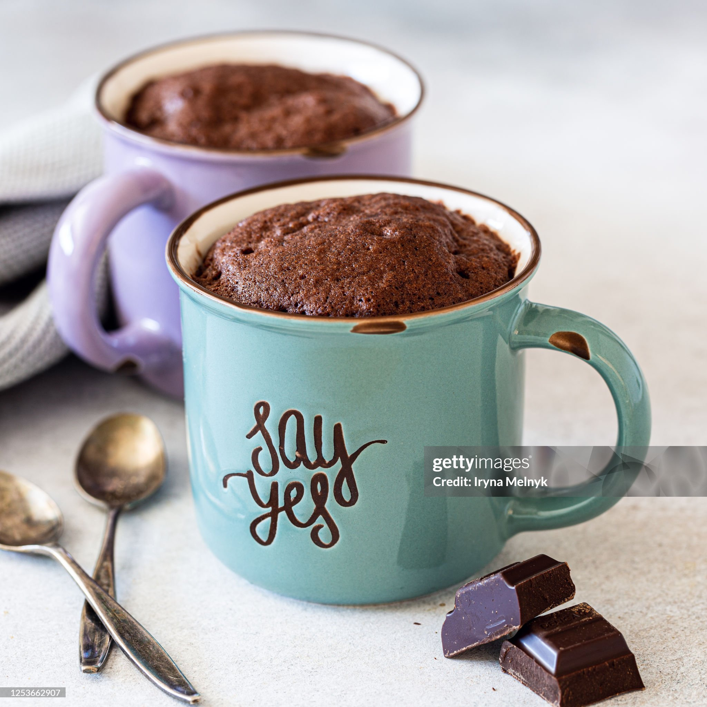

Home
Chocolate Chip Cookie

Description
This single-serve chocolate mug cake is rich, fudgy, and ready in just about
5 minutes from start to finish. No oven required—just a microwave, a mug, and
a few pantry staples!
Ingredients
- 4 tablespoons all-purpose flour
- 4 tablespoons sugar
- 2 tablespoons unsweetened cocoa powder
- ⅛ teaspoon salt
- ¼ teaspoon baking powder
- 3 tablespoons milk
- 2 tablespoons vegetable oil
- ¼ teaspoon vanilla extract
Directions
- In a microwave-safe mug, mix flour, sugar, cocoa powder, salt, and baking powder.
- Add milk, oil, and vanilla extract. Stir until smooth and no dry spots remain.
- Stir in chocolate chips or drop in a spoonful of Nutella if desired.
- Microwave on high for 1 minute to 1 minute 20 seconds. The top should look set but slightly gooey in the center.
- Let cool for 1-2 minutes before digging in—top with whipped cream, ice cream, or just enjoy as-is!